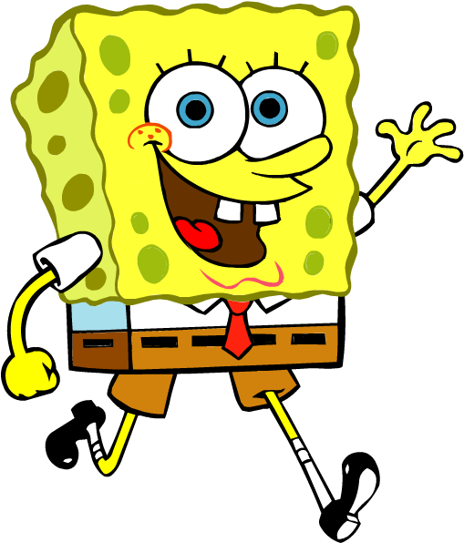

Personagens
Conheça os personagens de Bob Esponja
Sobre a animação
Bob Esponja é uma animação onde uma esponja-do-mar chamada Bob Esponja Calça Quadrada mora com seu caracol de estimação na Fenda do Biquíni, no fundo do oceano. Bob trabalha no Siri Cascudo e, nas horas vagas, vive arrumando confusões com seu melhor amigo, a estrela-do-mar Patrick.